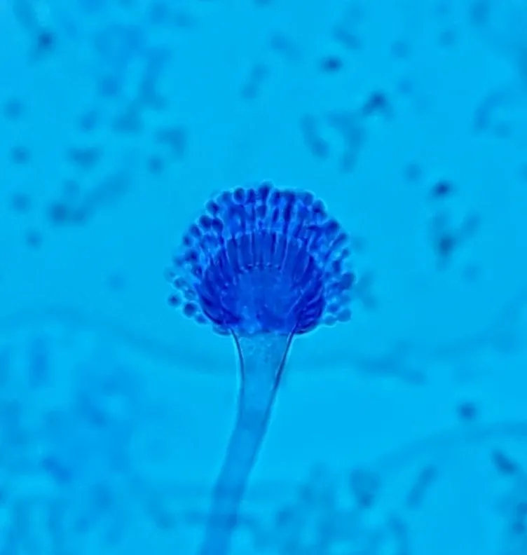

真菌 · 真菌界
烟曲霉 Aspergillus fumigatus

空气中最常见的霉菌之一，产生大量微小孢子，可引发哮喘和侵袭性曲霉病，是医院感染防控的重点真菌。
- 分类
- 门子囊菌门纲散囊菌纲目散囊菌目科曲霉科属曲霉属
- 栖息环境
- 土壤、堆肥、腐烂植物、室内灰尘与潮湿的建筑材料
- 地理分布
- 全球分布，空气中普遍存在其孢子
- 保护级别
- 暂无评估（条件致病真菌，非保护对象）
物种志
烟曲霉是子囊菌门散囊菌目的霉菌，菌丝有隔、分枝，在培养基上形成蓝绿色至灰绿色的绒毛状菌落。它的分生孢子梗顶端膨大形成顶囊，上面着生一层瓶梗，产生大量球形的小分生孢子；孢子直径仅 2–3 μm，可长时间悬浮在空气中并随呼吸进入肺部深处。
烟曲霉广泛存在于土壤、堆肥、腐烂植物和室内灰尘中，是空气中最常见的真菌之一。健康人吸入其孢子通常没有症状，但哮喘患者可能过敏，免疫力低下者（如白血病、器官移植患者）则可能发生侵袭性曲霉病，病情凶险。它是医院感染防控和食品、药品生产环境监测的重点真菌。预防以保持环境干燥通风、减少霉变材料暴露为主。
形态与习性
- 分类子囊菌门散囊菌目曲霉属
- 菌落蓝绿色至灰绿色，绒毛状
- 孢子直径仅 2–3 μm，可悬浮于空气中
- 致病性可致过敏、哮喘和侵袭性曲霉病
- 高风险人群免疫力低下者与呼吸系统疾病患者
- 防控保持环境干燥通风，减少霉变材料暴露
趣味知识
- 烟曲霉的孢子只有 2–3 μm，能随呼吸进入肺部深处。
- 它是空气中最常见的霉菌之一，在土壤和堆肥中大量存在。
- 对免疫力低下者，烟曲霉可能引起凶险的侵袭性曲霉病。